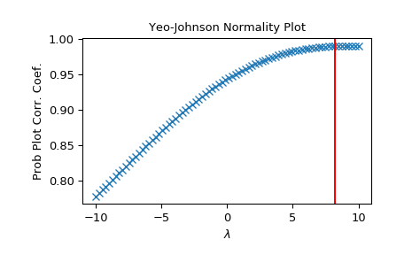

scipy.stats.yeojohnson_normmax¶
-
scipy.stats.yeojohnson_normmax(x, brack=(-2, 2))[source]¶ Compute optimal Yeo-Johnson transform parameter.
Compute optimal Yeo-Johnson transform parameter for input data, using maximum likelihood estimation.
- Parameters
- xarray_like
Input array.
- brack2-tuple, optional
The starting interval for a downhill bracket search with optimize.brent. Note that this is in most cases not critical; the final result is allowed to be outside this bracket.
- Returns
- maxlogfloat
The optimal transform parameter found.
See also
Notes
New in version 1.2.0.
Examples
>>> from scipy import stats >>> import matplotlib.pyplot as plt >>> np.random.seed(1234) # make this example reproducible
Generate some data and determine optimal
lmbda>>> x = stats.loggamma.rvs(5, size=30) + 5 >>> lmax = stats.yeojohnson_normmax(x)
>>> fig = plt.figure() >>> ax = fig.add_subplot(111) >>> prob = stats.yeojohnson_normplot(x, -10, 10, plot=ax) >>> ax.axvline(lmax, color='r')
>>> plt.show()
